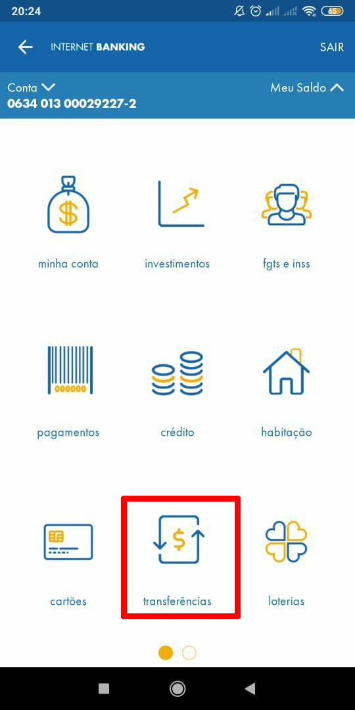
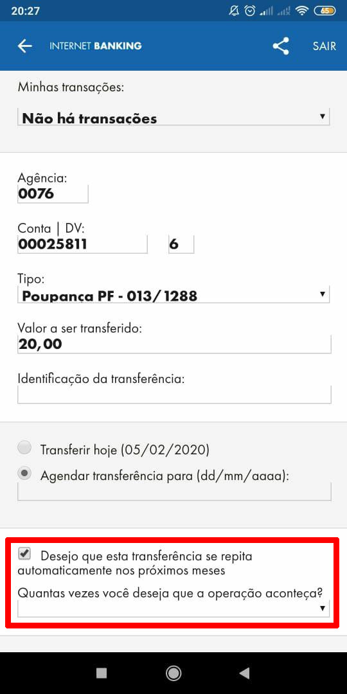

Passo 1
1º -> Abra o aplicativo da caixa e acesse sua conta;
2ª -> Após o acesso da conta clique na opção transferências.
Passo 2

1ª -> Agora vá na opção "transferência eletrônica" que esta marcada de vermelha.
Passo 3
1º -> No campo agência informe nossa agência 0000;
2º -> No campo Conta informe 00000000 e DV 0;
3º -> No campo tipo escolha o local onde esta depositado o dinheiro;
4º -> No campo valor a trânsferido, informe o valor desejado;
5º -> Caso deseje agendar à transferência marque a caixa que esta no quadrado vermelho;
6º -> Informe a quantidade de vezes que deseja repetir a operação;
7º -> Confirme a operação.